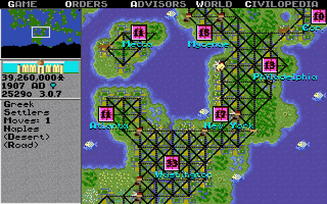
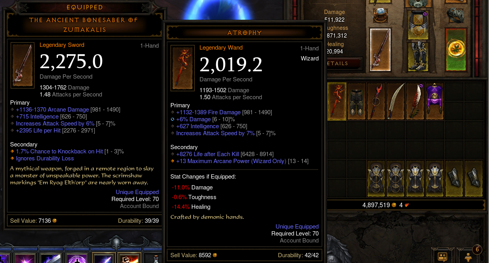
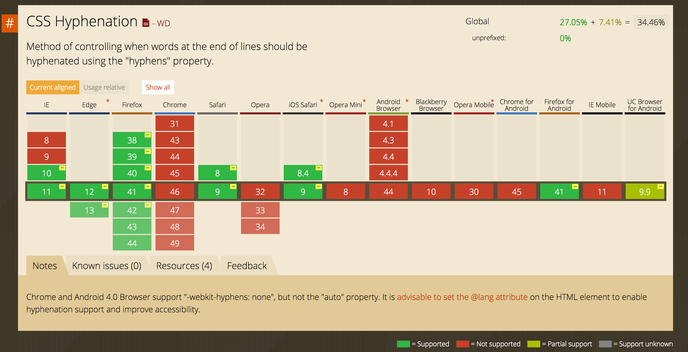

Шрифты и текст
WARNING
All listings appearing in this work are fictitious. Any resemblance to real codestyles, living or dead, is purely coincidental. You have been warned .... OlegВНИМАНИЕ
Все примеры кода использованные в данной презентации вымышлены. Любые совпадения с реальными кодстайлами, живыми или мертвыми, абсолютно случайны. Вы предупреждены ... ОлегЧто такое шрифт?
Компьютерный шрифт
Файл шрифта – это файл, содержащий в себе набор символови соответствующих им кодов.
Символы, в свою очередь, могут быть различными по назначению:
Aa
языковые знаки07
цифровые☂⁂
графические$#!
специальныеВывод шрифтов
 векторные
векторные
Растровые шрифты
Такой тип шрифтов был повсеместно распространен в эпоху динозавров матричных принтеров и экранов с очень маленьким разрешением и представлял собой набор растровых изображений каждого символа в виде каноничного битмапа, состоящего из цветных пикселей.

Final Fantasy I (1987)

Sid Meier's Civilization (1991)
Diablo (1996)

Parasite Eve II (1999)

А как со шрифтами обстоят дела в современных играх?
Far Cry 4 (2014)

Diablo 3 (2012)
Warcraft 3 (2002)

Векторные шрифты
Векторная графика основана на математических формулах геометрических объектов.

Современные шрифты описывают символы с помощью тех самых формул, что позволяет их масштабировать без потери качества, как и любое другое векторное изображение.
Сами по себе эти изображения – работа для процессора, ведь именно он в большинстве случаев в одиночку считает всю связанную с данной графикой математику.
Старая, но познавательная статья о шрифтахДанная презентация сделана с использованием векторного шрифта?
Шрифты – обширная тема и рассматривать ее можно со многих сторон.
Гарнитура шрифта
Анатомия шрифта

Baseline
Базовая линия – воображаемая прямая линия, проходящая по нижнему краю прямых знаков без учёта свисаний и нижних выносных элементов. В строке символы текста стоят на базовой линии, а нижние выносные элементы текста «свисают» с неё.

Cap height and x-height
Высота прописной буквы – расстояние от базовой линии до верхней линии прописных, то есть высота прописных букв без учета свисаний.
Высота строчных знаков – расстояние от базовой линии до верхней линии строчных, то есть высота строчных букв без свисаний и выносных элементов.

Leading
Интерлиньяж, межстрочный интервал — расстояние между базовыми линиями соседних строк. Так как в веб данный термин называется высотой строки, дальше мы будем использовать именно его.

Em Square
Кегельная площадка – верхняя прямоугольная часть ножки литеры, на которой расположено выпуклое (печатающее) изображение знака.

В цифровом шрифте кегельная площадка важна только при проектировании шрифта как прямоугольник, в который вписывается изображение знака.

Гарнитура – типографский термин, объединяющий набор шрифтов, которые отличаются по размеру, начертанию, наличию или отсутствию засечек на концах линий, пропорциям символов, по соотношению размера высоты прописных и строчных знаков, величине верхних и нижних выносных элементов, плотности, то есть близких по характеру и отличительным знакам рисунка.
Second Line
буквами
словами
Размер шрифта
С помощью font-size можно определить размер шрифта элемента. Размер шрифта определяется как высота от базовой линии до верхней границы кегельной площадки.
Размер шрифта можно установить с помощью:
xx-small
x-large
ключевых слов
%, em,
px, pt
единиц измерения длины
Ключевые слова
Первый набор значений – абсолютные: xx-small, x-small, small, medium, large, x-large, xx-large. По сути являются прямыми наследниками <font size="X"></font> с небольшим сдвигом:

Более того, они зависят от
настроек браузера пользователя.
а они те еще некроманты
В итоге сказать точно, какого размера будет шрифт – как минимум тяжело, и называть данные значения абсолютными язык не поворачивается.
Ключевые слова
А еще существуют относительные единицы: smaller и larger. Они изменяют размер шрифта относительно родителя примерно на 20%.
mark {
font-size: larger;
}
strong {
font-size: smaller;
}
Единицы измерения длины
Очевидно, что использовать стоит только данный вид значений. Разберем те, что используются чаще всего:
px – размер шрифта в пикселях. Так как задание динамического размера требуется нечасто, эта единица измерения является наиболее популярной:
p {
font-size: 10px;
}
Здесь не написано ничего интересного, уверяю вас. Никакого заговора нет, масоны и рептилойды – выдумка рентв, всем △!
em/% – размер шрифта в зависимости от размера шрифта родителя.
div {
font-size: .6em; /* === 60% */
color: #0b0;
}
Большой заголовок
Подпись к заголовку
Заголовок поменьше
Подпись к заголовку
Большой заголовок
Подпись к заголовку
Заголовок поменьше
Подпись к заголовку
Различия межжду em и % могут появиться только в зависимости от настроек браузера.
html {
font-size: 16px;
}
h2 {
font-size: 60px;
}
div {
font-size: 2rem;
}
Большой заголовок
Подпись к заголовку
Большой заголовок в 60px
Подпись к заголовку явно не 120px
Редко используемые единицы измерения длины в контексте шрифтов
pc, pt, ch, ex – типографские единицы измерения.
cm, mm, in – абсолютные единицы из реального мира.
vh, vw, vmin, vmax – единицы измерения относительно viewport'а.
Высота строки
Высоту строки можно указывать двумя типами значений: единицей измерения длины и множителем. В чем же разница?
body {
font-size: 20px;
}
.line-height-mult {
line-height: 1.5;
}
.line-height-em {
line-height: 1.5em; /* === 150% */
}
.line-height-pixel {
line-height: 30px;
}
...
Swinging against the wind Keeping the noose tight on her skin God will save her, the father's Lucifer, they say Oh do they
Does that make it okay? Sin finds the culprit Unexplained circumstances cause people to fear, Deceive and act so irrationally
Up in the bedroom she's seeing ghosts Demons in clothes, people she knows Swear on the bible that earns their trust Fractions of fiction dismissed so start your hunt
А что, если у параграфов мы захотим сделать размер шрифта другим? Каков будет результат?
body {
font-size: 20px;
}
.line-height-mult {
line-height: 1.5;
}
.line-height-em {
line-height: 1.5em; /* === 150% */
}
.line-height-pixel {
line-height: 30px;
}
p {
font-size: 30px;
}
Swinging against the wind Keeping the noose tight on her skin God will save her, the father's Lucifer, they say Oh do they
Does that make it okay? Sin finds the culprit Unexplained circumstances cause people to fear, Deceive and act so irrationally
Up in the bedroom she's seeing ghosts Demons in clothes, people she knows Swear on the bible that earns their trust Fractions of fiction dismissed so start your hunt
Расстояние между буквами (разрядка)
Для изменения разрядки предусмотрено свойство letter-spacing.
Можно указать любые единицы измерения длины кроме процентов. В современных браузерах можно указывать дробные значения пикселей.
.zero {
letter-spacing: normal;
}
.first {
letter-spacing: -2.5px;
}
.second {
letter-spacing: 1em;
}
We are the sheep that rose against the shepherd We are the ones you led astray
Embrace the light in your heart Not the one in the sky
Saints and sinners rejoice We will all rot together
Расстояние между словами
Расстояния между словами можно изменить свойством word-spacing.
Можно указать любые единицы измерения длины кроме процентов.
.zero {
word-spacing: normal;
}
.first {
word-spacing: -2.5px;
}
.second {
word-spacing: 1em;
}
We're reaching for the sky now stretching out our limbs
to the birds to the clouds To the people who cut us down
We're building mountains higher Today! Today! Today!
Характеристики рисунка одной гарнитуры:
01
наклон02
насыщенность03
плотностьКапитель
Текст Из Слов
С Заглавных
Букв Каждое
.h3 {
font-variant: normal;
}
Текст Из Слов
С Заглавных
Букв Каждое
.h3 {
font-variant: small-caps;
}
Наклон
font-style: normal /* а */
oblique /* б */
italic /* в */
Насыщенность
font-weight: normal /* обычный (а) */
bold /* жирный (в) */
light /* тонкий */
100 /* thin */
200 /* extra light */
300 /* light */
500 /* normal */
600 /* semi-bold (б) */
700 /* bold */
800 /* extra bold */
900 /* black */
lighter /* тоньше шрифта родителя на 300 */
bolder /* жирнее шрифта родителя на 300 */
Плотность
font-stretch: ultra-condensed;
extra-condensed;
condensed;
semi-condensed;
normal;
semi-expanded;
expanded;
extra-expanded;
ultra-expanded;
.block {
font-family: 'My Font Condensed'
}
.block {
font-family: 'My Font Expanded'
}
Нюанс работы с начертаниями
 наклонный шрифт
наклонный шрифт
 жирный шрифт
жирный шрифт
Браузер попытается «наклонить»/«насытить» обычное начертание, используя для этого упрощенные алгоритмы. Нужно понимать, что разница с настоящей наклонной / жирной гарнитурой может быть весьма заметна.
Классификация шрифтов в веб:
serif
c засечкамиsans-serif
без засечекcursive
рукописныеfantasy
декоративныеmonospace
моноширинныеШрифты в ОС
В поставке каждой операционной системы имеется набор шрифтов. Существует ряд шрифтов, которые есть практически в каждой из них, таким образом их использование считается наиболее безопасным.
| Без засечек | Arial |
| С засечками | Times New Roman |
| Моноширинный | Courier New |
Итак, как же применить шрифт к нашей странице?
body {
font-family: 'Arial';
}
body {
font-family: Arial;
}
body {
font-family: Arial, Helvetica, Calibri;
}
body {
font-family: Arial, Helvetica, Calibri, /* ?????? */;
}
И в 99% случаев это Times New Roman.
body {
font-family: Arial, Helvetica, Calibri, /* Times New Roman */;
}
Вот теперь нам пригодится классификация:
- serif – с засечками
- sans-serif – без засечек
- cursive – рукописные
- monospace – моноширинные
- fantasy – декоративные
body {
font-family: Arial, Helvetica, Calibri, sans-serif;
}
Но что, если нам нужен шрифт, которого точно нет во всех ОС?
Нестандартные шрифты
Всегда есть возможность подключить свой шрифт на страницу, и делается это с помощью правила @font-face.
@font-face {
font-family: myCustomFont;
/* .woff — один из популярных форматов веб-шрифтов */
src: url(myCustomFont.woff);
}
body {
font-family: myCustomFont, sans-serif;
}
Как видите, ничего сложного нет. Но, как и всегда в вебе, есть нюансы.
Во-первых
Подключенный шрифт жирного начертания и, например, узкого начертания – два разных файла, и подключать их нужно отдельно.
@font-face {
font-family: Sooo Good Font Bold; /* жирный */
src: url(soGoodFontBold.woff);
}
@font-face {
font-family: Sooo Good Font Condensed; /* узкий */
src: url(soGoodFontCond.woff);
}
header {
font-family: Sooo Good Font Bold, sans-serif; /* как поезд пассажирный */
}
footer {
font-family: Sooo Good Font Condensed, sans-serif; /* узкий */
}
@font-face {
font-family: Sooo Good Font;
src: url(soGoodFont.woff);
font-style: normal; /* обычный */
}
@font-face {
font-family: Sooo Good Font;
src: url(soGoodFontItalic.woff);
font-style: italic; /* курсивный */
}
body {
font-family: Sooo Good Font; /* обычный */
}
footer {
/* font-family унаследуется от body */
font-style: italic; /* курсивный */
}
Проблема #1 решена. Идем дальше...
Во-вторых
Все уже поняли, что браузеры дружно жить не хотят. А вернее – не хотели. Раньше, чтобы подключить шрифт на страницу, приходилось использовать аж 4 формата шрифтов: .svg, .ttf, .woff и .eot.И выглядело это примерно так:
@font-face {
font-family: myFont;
src: url('myFont.eot');
src: url('myFont.eot?#iefix') format('embedded-opentype'),
url('myFont.woff') format('woff'),
url('myFont.ttf') format('truetype'),
url('myFont.svg') format('svg');
font-weight: normal;
font-style: normal;
}
@font-face
{
font-family: myFont;
src: url(myFont.woff) format(woff),
url(myFont.ttf) format(truetype);
}
Генерация форматов шрифтов
Идеальным вариантом генератора шрифтов является дизайнер, который пришлет весь набор нужных форматов, но это утопия.Поэтому существуют сервисы-генераторы, которые помогают собрать весь пакет нужных форматов в несколько кликов.
Самый популярный из них – Font Squirell.
Эти сервисы так же помогают значительно уменшить вес благодаря выбору
только нужных символов шрифта или диапазонов, например,
только кириллических и латинских символов.
Почитать подробнее про различия сервисов можно
тут.
А еще существуют сервисы, которые предоставляют шрифты. Самым популярным в этой категории является Google Fonts.
В-третьих
Шрифты – файлы, а файлы нужно загружать. Более того, когда шрифт загружен на страницу, он не применяется сразу.Сначала стоит разобраться с тем, что происходит в браузере при работе со шрифтами:
- Браузер получает и парсит CSS
- Встречает в CSS @font-face, но НЕ скачивает файл шрифта
- Парсит CSS дальше и встречает указание шрифта в font-family
- Начинает загрузку шрифта
- По окончанию загрузки парсит шрифт и применяет к странице
Что же видит пользователь в этот момент?

Flash of unstyled text – момент подмены одного шрифта другим. Это происходит в старых версиях браузеров, а также в Internet Explorer, которые сначала отображают запасной шрифт, а после загрузки шрифта применяют нужный.
Но веб не стоит на месте, и уже сейчас обсуждается свойство font-display, которое позволяет контролировать поведение шрифта, который подключен @font-face: оставлять «невидимый» текст или показывать с FOUT, сколько секунд ждать загрузки шрифта, оставлять ли запасной шрифт, если нужный долго загружается и многое другое. Подробнее об этом можно почитать тут.
Итак, вывод в том, что загрузка файлов шрифта и его отображение на странице – достаточно трудоемкий для браузера процесс, поэтому его следует оптимизировать.
What can we do?
- Запись шрифта напрямую в CSS в формате base64
- Исключение ненужных символов
- Архивация gzip
- Кэширование с помощью настроек сервера
- Использование формата Woff 2.0
-
Поднятие @font-face и его
использования в font-family выше в коде
Более подробно обо всем этом можно
прочитать в текстовой версии лекции.
Свойство font
body {
font: 14px; /* не будет работать */
font: italic Arial; /* это тоже */
font: 14px Arial, sans-serif;
font: 14px/1.2 Arial, sans-serif;
font: italic bold 14px Times New Roman;
font: small-caps italic 700 14px/20px Arial, sans-serif;
}
Текст
Материализованная человеческая мысль
Выравнивание
Осуществляется с помощью свойства text-align.
.uno {
text-align: left;
}
.dos {
text-align: right;
}
.tres {
text-align: center;
}
.cuatro {
text-align: justify;
}
По левому краю
По правому краю
По центру
По всей ширине WTF?
We need so many text as possible, my comrade, otherwise we can't see what's "justify" doing
And again to compare with left alignment:
We need so many text as possible, my comrade, otherwise we can't see what's "justify" "left" doing
«Украшение» текста
Сложно назвать это украшением, но дословно свойство text-decoration переводится именно так. Оно имеет три законных значения overline, line-through и underline. Оно позволяет нам сделать так:
никакое это
не украшение
ну подчеркивание для ссылок можно использовать, да
Стоит отметить, что text-decoration не наследуется дочерними элементами, и им нельзя отменить «украшение», которое применено родителю.
Текст надчеркнут.
Текст по-прежнему надчеркнут.
Текст надчеркнут. Текст по-прежнему надчеркнут.
Преобразование текста
Свойство text-transform позволяет менять регистр букв с помощью трех значений: capitalize, lowercase и uppercase.
регистр прям как у названий песен
В HTML ЭТОТ ТЕКСТ НАПИСАН КАПСОМ // ПОВЕРЬТЕ НА СЛОВО
а этот не капсом // тоже придется поверить!!!
Абзацный отступ
Для задания величины отступа используется свойство text-indent. Допустимо использовать любые единицы измерения длины, а также отрицательные значения.
p {
/* отступ внутрь слева */
padding-left: 2em;
}
.eins {
text-indent: 5%;
}
.zwei {
text-indent: -1em;
}
Let's talk about the old days, Let's talk about your friends, Let's talk about the summer And how you wish it wouldn't end. Did I forget to tell you, How pretty you looked in that dress? In the first time that I saw you, You cleaned the mess from my head.
Lets go walking on the boardwalk, Dip our feet into the sea. Lets find ourselves lost for hours, Until we find ourselves a drink. Lets talk that sun into setting, Just need the sound of your voice. Need that calming and the comfort, Something to drown out the noise.
Цвет
Цвет текста задается с помощью свойства color. Цвет в вебе может быть представлен различными способами, но рекомендованы два:- hex для сплошных цветов
- rgba() для полупрозрачных
Почитать об этих двух и других способах можно тут.
h1 {
color: #f00;
}
DEADLINE
Нюанс #1
color устанавливает так называемый цвет переднего плана (в противовес background-color – цвет фона), поэтому он имеет влияние на многие свойства: в него окрашиваются линии text-decoration, он наследуется для многих свойств, например, для рамок, теней и некоторых других.
p {
color: #0f0; /* зеленый цвет текста */
border: 5px solid; /* рамка будет зеленой */
box-shadow: 0 0 50px; /* и тень элемента */
text-shadow: 4px 4px 10px; /* и тень текста */
}
acid text acid text acid text acid text acid text acid text acid text acid
Нюанс #2
Свойства, которые не наследуют цвет от color автоматически, могут сделать это при помощи ключевого слова currentColor.
h1 {
color: #f0f;
background-color: currentColor; /* цвет фона станет #f0f */
}
WHY?
THAT'S WHY
Тень текста
Создадим тень со сдвигом в 4 пикселя вправо вниз,
по умлочанию она будет такого же цвета, что и текст:
h1 {
text-shadow: 4px 4px;
}
Shadow heading
Закрасим ее красным цветом:
h1 {
text-shadow: 4px 4px #f00;
}
Shadow heading
Добавим размытие в 10 пикселей:
h1 {
text-shadow: 4px 4px 10px #f00;
}
Shadow heading
Сдвиг может быть отрицательным. Можно также указывать две и более теней, перечислив их через запятую. Поэтому укажем тень со сдвигом влево вверх зеленого цвета:
h1 {
text-shadow: 4px 4px 10px #f00,
-4px -4px 10px #0f0;
}
Shadow heading
При определенной склонности к извращениям и степени отсутствия личной жизни можно прийти к очень крутым эффектам типа
Shadow heading
h1 {
text-shadow: 0 0 10px #fff,
0 0 20px #fff,
0 0 30px #fff,
0 0 40px #ff00de,
0 0 70px #ff00de,
0 0 80px #ff00de,
0 0 100px #ff00de,
0 0 150px #ff00de;
}
Shadow heading
h1 {
background: #aaf;
text-shadow: 0 1px 0 #ccc,
0 2px 0 #c9c9c9,
0 3px 0 #bbb,
0 4px 0 #b9b9b9,
0 5px 0 #aaa,
0 6px 1px rgba(0,0,0, .1),
0 0 5px rgba(0,0,0, .1),
0 1px 3px rgba(0,0,0, .3),
0 3px 5px rgba(0,0,0, .2),
0 5px 10px rgba(0,0,0,.25),
0 10px 10px rgba(0,0,0, .2),
0 20px 20px rgba(0,0,0,.15);
}
Многоколоночность
Этот прием применяется при верстке газет, журналов по причине того, что читать широкие блоки текста некомфортно.

В европейских языках чтение текста происходит слева направо,
в то время как есть языки, где текст читается справа
налево. При смешении в одном документе разных
по написанию символов в системе юникод,
их направление определяется браузером из характеристик
и содержимого текста.
div {
/* в Chrome-like браузерах и Firefox
свойство работает только с префиксами */
column-count: 2;
}
div {
column-count: 2;
column-gap: 300px;
}
div {
column-count: 2;
column-rule: 2px solid #0f0;
}
div {
column-width: 200px;
column-rule: 2px solid #fff;
}
В европейских языках чтение текста происходит слева направо,
в то время как есть языки, где текст читается справа
СНОСКА ПРЯМ ТУТА, НЕСКРОМНО
налево. При смешении в одном документе разных
по написанию символов в системе юникод,
их направление определяется браузером из характеристик
и содержимого текста.
div {
column-count: 2;
column-rule: 2px solid #fff;
}
h3 {
column-span: all;
font-style: italic;
margin: 10px;
}
СНОСКА ПРЯМ ТУТА, НЕСКРОМНО
налево. При смешении в одном документе разных по написанию символов в системе юникод, их направление определяется браузером из характеристик и содержимого текста.Чуть более подробно о колонках можно почитать здесь.
Переполнение текста
| Name | Surname | Points |
|---|---|---|
| Cloud | Strife | 77 |
| Vladimir | Putin | 147 |
| Akakiy | Stanislavovskiy | 666 |
| Konstantinchik | Ivanov | 0 |
Переполнение контента следует скрыть при помощи правила overflow: hidden. Подробнее об этом правиле вы узнаете позже, сейчас оно просто помогает нам в примере.
| Name | Surname | Points |
|---|---|---|
| Cloud | Strife | 77 |
| Vladimir | Putin | 147 |
| Akakiy | Stanislavovskiy | 666 |
| Konstantinchik | Ivanov | 0 |
Как видно, буквы обрезались посередине. И в целом такой резкий обрыв смотрится не самым лучшим образом.
Для этого предусмотрено свойство переполнения текста text-overflow, имеющее два значения: clip(по умолчанию) и ellipsis. Установим ellipsis для ячеек:
| Name | Surname | Points |
|---|---|---|
| Cloud | Strife | 77 |
| Vladimir | Putin | 147 |
| Akakiy | Stanislavovskiy | 666 |
| Konstantinchik | Ivanov | 0 |
В таких случаях стоит добавять хотя бы атрибут title, чтобы можно было увидеть полный текст.
Перенос текста
Для того, чтоб перенести текст в произвольном месте на следующую строку, необходимо указать элемент br в месте, где необходим перенос:
Далеко-далеко за
словесными горами в
стране гласных
и согласных живут рыбные тексты.
Далеко-далеко за
словесными горами в стране гласных
и согласных живут рыбные тексты.
Переносы внутри слов
Переносы внутри слов используется для того, чтобы свести к минимуму разброс ширины пробелов у выравненого по ширине текста:
Далеко-далеко за словесными горами в стране гласных и согласных живут рыбные тексты. Вдали от всех живут они в буквенных домах на берегу Семантика большого языкового океана.
А также избавить от «лесенок» при выравнивании по левому краю:
Далеко-далеко за словесными горами в стране гласных и согласных живут рыбные тексты. Вдали от всех живут они в буквенных домах на берегу Семантика большого языкового океана.
Вот так выглядит текст с автопереносами:
Далеко-далеко за словесными горами в стране гласных и согласных живут рыбные тексты. Вдали от всех живут они в буквенных домах на берегу Семантика большого языкового океана.
Как этого добиться?
Просто указываем язык для параграфа и устанавливаем автопереносы с помощью свойства hyphens:
Далеко-далеко за словесными горами в стране
гласных и согласных живут рыбные тексты.
Вдали от всех живут они в буквенных домах на берегу
Семантика большого языкового океана.
p {
hyphens: auto;
}
Ура, товарищи!
Браузеры отлично работают с текстом, все красиво и переносятcя слова как надо на всех языках!
Нет
Мягкие переносы
Существует возможность «подсказать» браузеру, где допустимо делать переносы. Для этого необходимо расставить ­ в соответствующих местах:
Чтоб мягкие переносы работали, свойство hyphens должно иметь значение manual. это значение по умолчанию, поэтому who cares?
Но что, если нам надо, чтобы перенос происходил без дефиса? Тогда нам потребуется элемент wbr:
Далеко-далеко за словесными
горами в стране гласных и со гласных
живут рыбные тексты. Вдали от всех живут они в
бук венных домах на берегу Семантика
большого языкового океана.
Да
Есть сервисы, которые расставляют переносы сами, например, этот.
Мы можем заставить текст всегда «разрываться» в любом месте. Для этого используется свойство word-break со значением break-all. есть еще значение keep-all, но работает оно только для китайского, корейского и японского языков, so who cares again?
零 {
word-break: normal;
}
一 {
word-break: break-all;
}
Этот текст будет переноситься по словам, чисто, чинно, благородно. Всё в столбец, как этот чертяка так делает?
Этому тексту плевать вообще, он такой теряет буквы, ничего толком не прочесть, беда совсем, еще дергается как монстры из silent hill
Запрет переноса
Существуют ситуации, когда слово или словосочетание не нужно разрывать ни при каких обстоятельствах. Простейший пример:
Тут нужно что-то написать, чтобы текст сдвинул `mark` в неудобное положение.
Правило hypens: auto; использует примерно никто,
ибо пока оно не работает нормально
Некрасиво.
Перенос нужно запретить:
mark {
white-space: nowrap;
}
Красиво.
И white-space умеет еще много чего.
We ache to be transparent
We run from the "open" arms;
The facade of something greater than ourselves (здесь просто дополнительный текст, чтобы не помещался в строку)
And we're left to coexist with infestation
Our history is cursed
Through the past, present, and future
If they're created in his image
Then his image is disgusting...
And even he can't wipe you clean
p {
white-space: pre;
}
p {
white-space: pre-line;
}
p {
white-space: pre-wrap;
}
p {
white-space: nowrap;
}
Псевдоэлемент первой строки
Оформить первую строку можно с помощью псевдоэлемента ::first-line. Но далеко не все свойства применятся к нему.Примерный список того, что можно сделать:
- font
- text
- word/letter-spacing
- color
- background
- vertical-align
p::first-line {
font: 25px Courier New;
letter-spacing: 6px;
}
Текст в первой строке будет выглядеть как китайско-русская инструкция
купленного на таганчике барахла. И не спрашивайте откуда
я это знаю и почему вообще показываю как этот шрифт имитировать.
Текст в первой строке будет выглядеть как китайско-русская инструкция купленного на таганчике барахла. И не спрашивайте откуда я это знаю и почему вообще показываю, как этот шрифт имитировать.
Псевдоэлемент первой буквы
Оформить первую букву можно с помощью ::first-letter. У данного псевдоэлемента список свойств, которые можно использовать, чуть шире за счет:- margin
- padding
- border
p::first-letter {
font: italic 50px Times New Roman;
margin: 15px;
padding: 10px;
color: #f00;
background: #0ff;
border: 2px dashed #0f0;
}
Хочется сделать наиболее вырвыглазный вариант,
отвратный прям максимально и бесповоротно
А еще лучше – в два параграфа, чтобы вдвойне вырвиглазнее
Хочется сделать наиболее вырвыглазный вариант, отвратный прям максимально и бесповоротно
А еще лучше – в два параграфа, чтоб вдвойне вырвиглазнее
Секретики Яндекса
.ya::first-letter {
color: #f00;
}
Олег Олегович разочарован, что никто не заюзал данную фичу
ДЗ
https://github.com/urfu-2015/verstka-tasks-4Deadline
28 октября
23:59:59.999